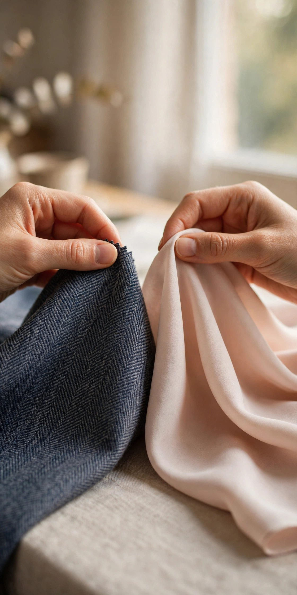

無料・登録不要。結果は最後の画面で開きます。
骨格は、生まれつきで一生変わりません。太った・痩せたでは変わらない、体の質感とラインの特徴です。だから一度知れば、服選びの判断軸としてずっと使えます。
似合う色は、肌・目・髪との調和で決まります。流行色ではなく、あなたの色素に合うかどうか。合う色は顔色を上げ、合わない色は疲れて見せます。
この2つは別物です。形だけでも、色だけでも、「似合わない」の説明は半分しかできません。両方そろって、初めて理由が全部見えます。
質問は1問ずつ、比べながら答える形です。途中で結果は見えません。全部答えた先でだけ、あなたのタイプが開きます。
質問の例（進み具合が見えます）
手首の骨は、どちらに近いですか？
迷ったときは、見るポイントのガイドが付きます。
結果の見本
ウェーブ × ブルベ夏
柔らかな線に淡い色。穏やかでフェミニンな印象に。結果には、その日の運勢（色とアイテム）も付きます。
答える 1問ずつ、2つの選択肢を比べて選ぶだけ。
結果が開く 骨格×カラーの組み合わせと、似合う理由がまとめて出ます。
今日の運勢 結果の最後に、今日の色とアイテム（占い）が付きます。
ここが診断モジュールです（方式は確定後に差し替える前提の置き場）。
骨格タイプ
パーソナルカラー
無料・登録不要。入力がサーバーへ送られることはありません。